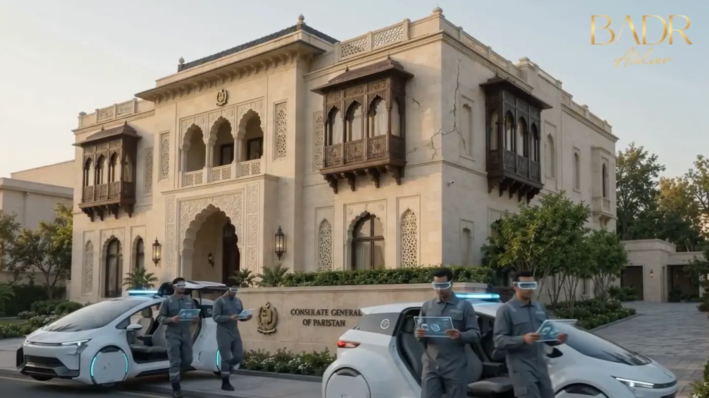
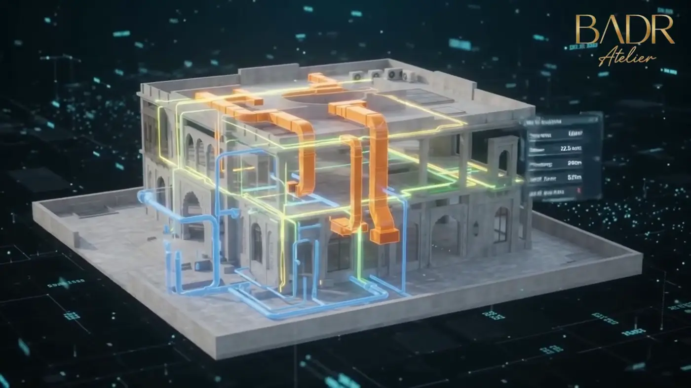
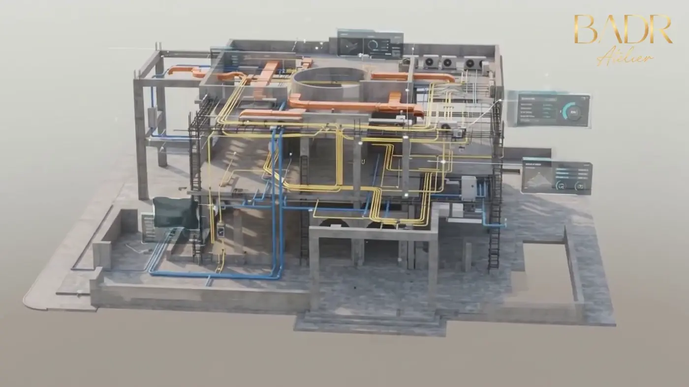
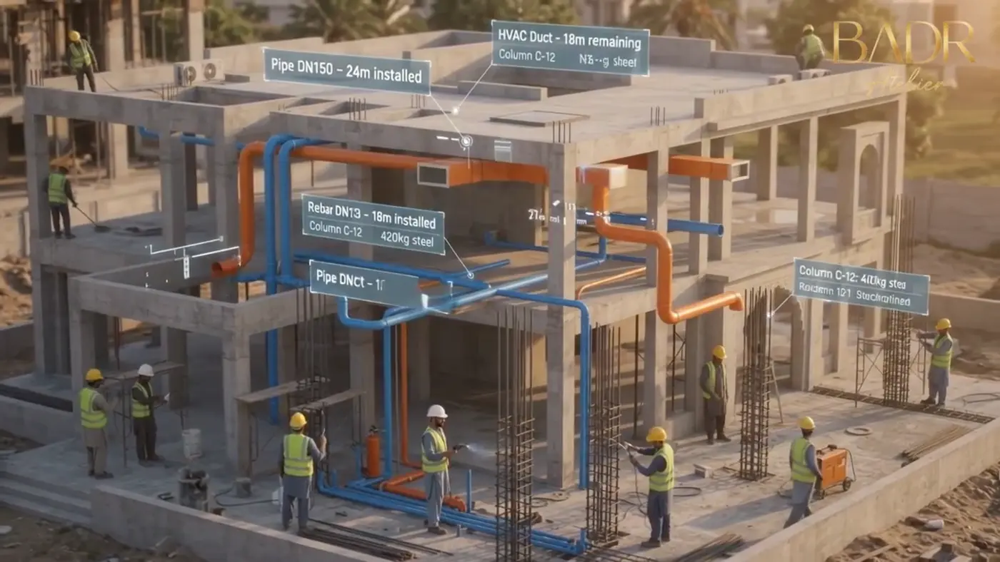
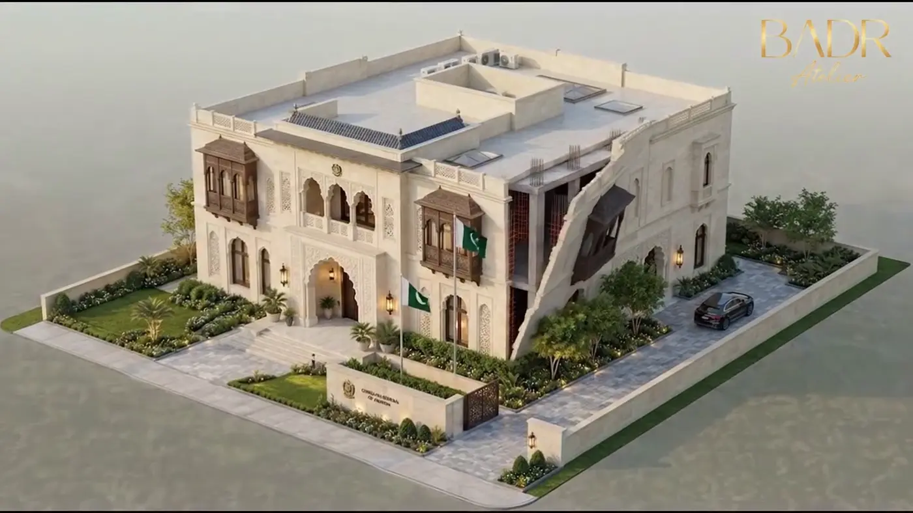
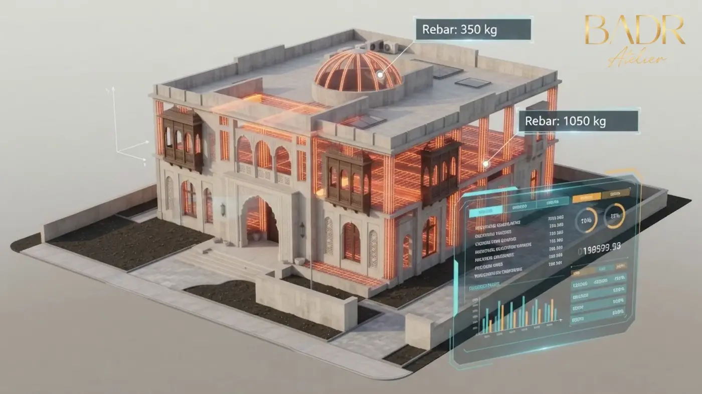
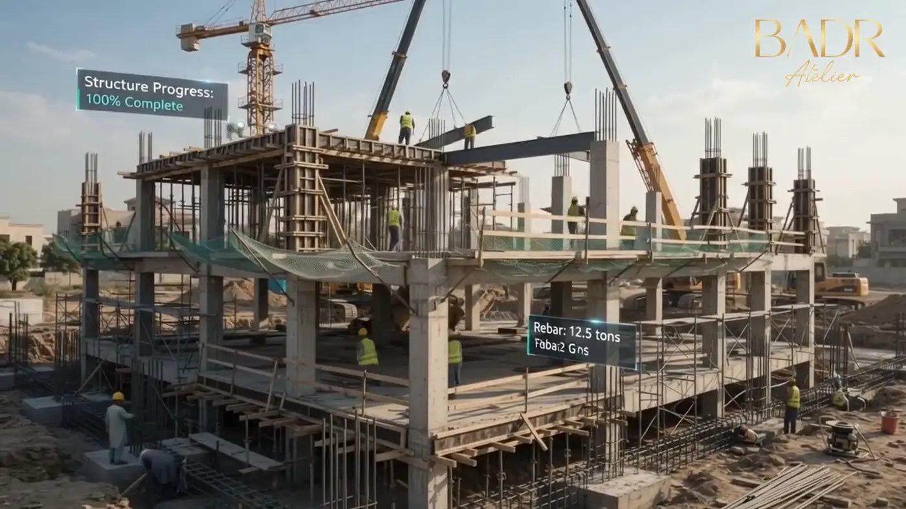
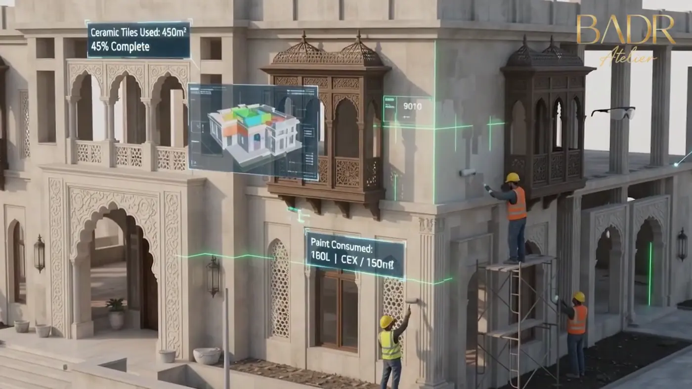

Shot 01Physical Identity + Digital Scene
From design to build to operate: an information model that protects identity, connects decisions and makes the building lifecycle visible.
This short introduction is built from official film stills to show how the villa moves from physical architectural language to a connected digital asset across information, coordination, execution and operations.




A cinematic BIM sequence using the supplied official BIM film: the information model moves from design intent to construction logic and asset continuity, with BADR branding embedded for presentation-quality impact.
The journey begins with information that structures design and coordination, extends into construction planning and progress control, and reaches an asset model prepared for handover and operations. The goal is continuity of decisions across stages.
Key stills extracted from the official BIM film reinforce lifecycle, model information and digital delivery for the diplomatic villa.




A design visualization of the architectural identity supported by the project's digital journey.